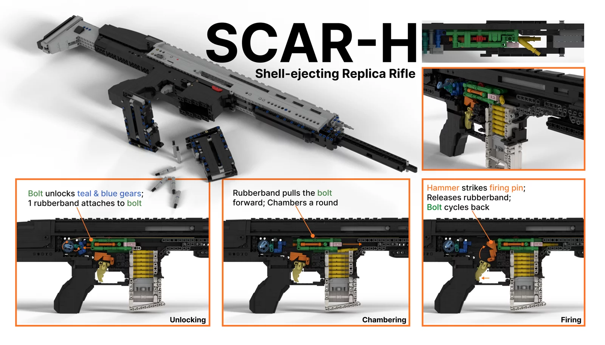
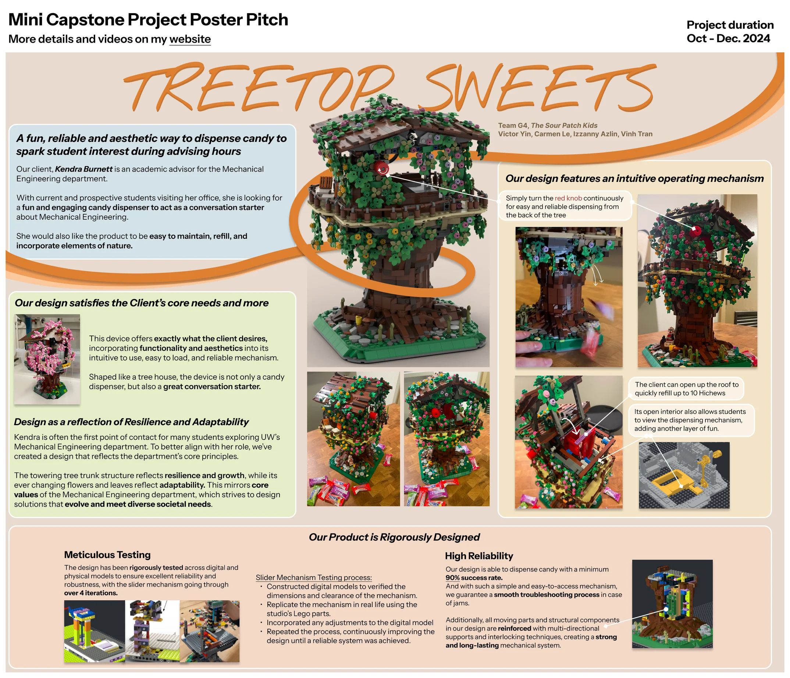

melty’s LEGO 2.8M views
A passion project since grade 6. Started with tutorials, then reverse engineering, now inventing new mechanisms for a community of 10k+ subscribers.
Creator · YouTube: @meltylego
Skills
Why guns?
Nothing in particular. They’re just the perfect vessel for intricate analog mechanisms, they’re interactive, and it just looks cool in slo-mo. My grandmother would yell at me to come eat or go to sleep, because I was so immersed in figuring the mechanisms out.

My niche
I focus on realistic shell-ejecting blowback mechanisms. It took about 5 years, on and off, to develop a reliable mech (the UMP) after 4 earlier versions: the SCAR-H, SMG, AK-12 and G36C, shown here.
It’s a delicate balance between friction, chambering reliability and rubber band/spring strengths, achieved using creative LEGO connections and sometimes sanding or custom-cut pieces.
Takeaways
As I grew older, the community got less active in general. In senior year, I started a website to share free designs and a Discord community for young builders, to inspire them toward engineering just as I was when I was younger. Taking a mechanism apart, figuring it out and making it better: it’s still the same with my work in MechE all this time later, just now I’m 3D printing ABS instead of LEGO ABS :)

TreeTop Sweets
Another build for fun, for a short capstone: a candy dispenser, now used by my undergrad ME department’s advisor to treat students to something sweet during appointments. I designed it in Studio 2.0 (LEGO CAD) over about 3 days.